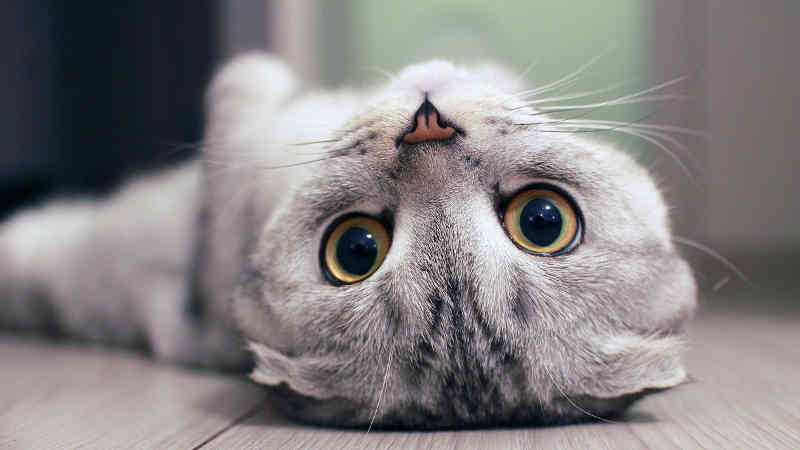

Cats are worshipped on the web. They are everywhere online... as photos shared by friends, on social networking sites, as cute pictures on Reddit, on any of the cat-centered Tumblr sites, and even here on CatUni.

But nowadays people seem to have forgotten the beauty of our feline friends. Gone are the days of infinitely browsing cat videos on youtube, and soon we might lose interest in them completely.
our services
Unlimited Cat Videos
Ever wanted to watch a dozen videos of cats before finding out you need to pay for them? No more! Catuni delivers free cat content without costing a penny!
Read MoreLive Cat Play Sessions
We organise play sessions with cats every week at 14:30 PM. All you need to do is find your local Catuni university and book an appointment!
Read MoreFree Cat Givaways
Do you feel lonely at home? No one to play with? Fear not, for Catuni organises monthly cat givaways! From Persian cats to Bengal tigers, you can get one for free if you apply for Catuni!
Read MoreCat Quizzes with Prises
Feel the thrill and test your cat knowledge to the limits with our specialised cat quizzes! Do you feel like you know everything about cats?
Read MoreCat Buddie Meet-ups
Don't walk a lonely road! Meet other cat enthusiasts on your cat journey with only a click! Catuni now supports 5000 dedicated members and is still growing!
Read MoreJob Offerings for the Best
Ever wanted to get paid for working with cats? Say no more! Catuni offers its best students to highly sought-after companies, giving appreciative jobs to those in need and working hand to its clients!
Read MoreCat is Love, Cat is Life.
What are you waiting for?